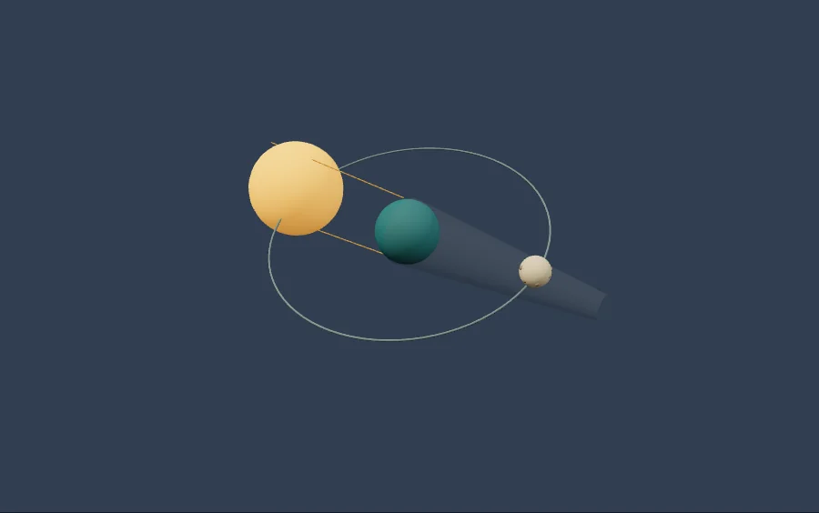

Interactive planetarium
Insidethe shadow
Move the Moon through Earth’s shadow and watch a lunar eclipse take shape.
Move through the shadowAn eclipse in three states
Scrub the Moon’s path or pick a state. The drawing simplifies the scale of the Sun, Earth, Moon and their distances.
Earth blocks part of the sunlight
The Moon dims slightly as it crosses the penumbra, the outer part of Earth’s shadow.
Shadow coverage calculator
Change the center-to-center offset in a simplified cross-section. The tool estimates the part of the lunar disk in each shadow.
3D model
Sun, Earth and Moon
